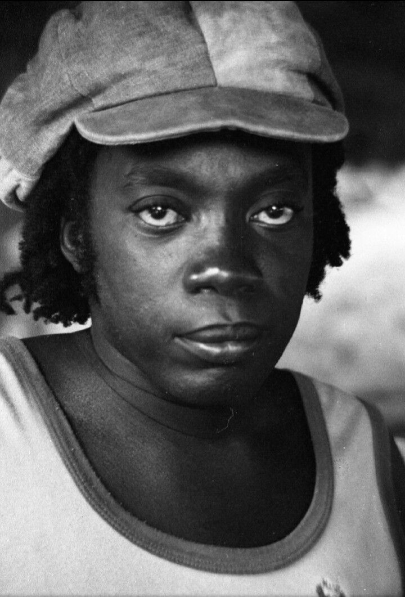
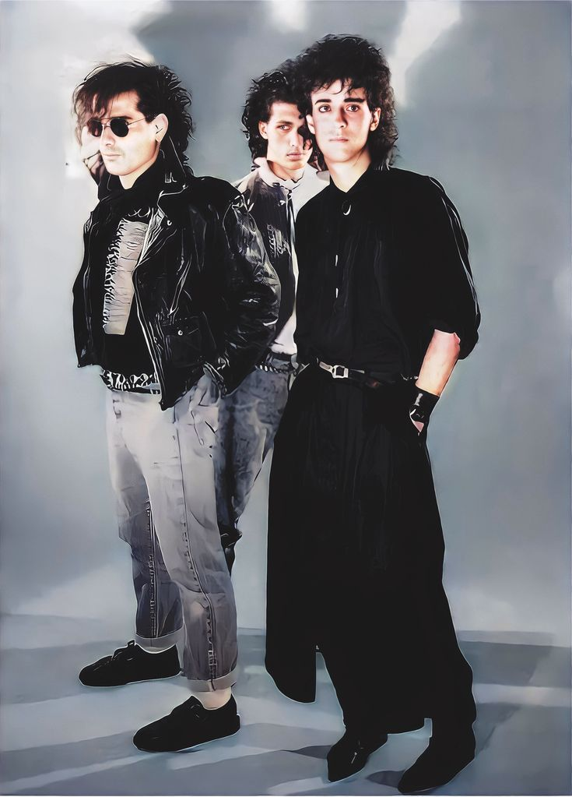
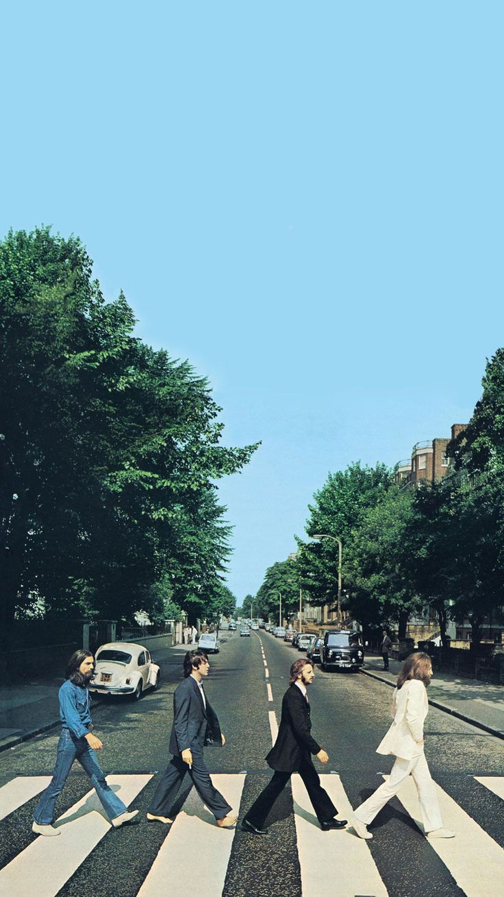

Experiências como Web Designer/Minhas Habilidades
Ao longo do curso, meu desenvolvimento como web designer foi uma das partes mais enriquecedoras, tanto no aspecto pessoal quanto no profissional. Isso me proporcionou não apenas um crescimento individual, mas também ampliou minhas oportunidades no mercado de trabalho, oferecendo uma gama maior de habilidades profissionais.
Um marco importante nesse processo foi o desenvolvimento do site da Mafre, logo no início do curso. Esse projeto me desafiou a aprender novas tecnologias e conceitos que, até então, eu sequer conhecia. Nas semanas seguintes, avancei em várias áreas da programação, aprofundando meu conhecimento em HTML e CSS. Mais recentemente, comecei a explorar o JavaScript, ampliando ainda mais minhas competências técnicas.
  Entre as minhas principais habilidades, destaco a minha comunicação eficaz, liderança natural e a capacidade de resolver conflitos de forma equilibrada.
Sempre aberto ao diálogo, tenho uma escuta ativa que me ajuda a entender o que as pessoas realmente querem dizer.
Sou uma pessoa determinada, com foco, proatividade e adaptabilidade, pronta para enfrentar qualquer desafio.
Acima de tudo, acredito que a inteligência emocional é minha maior aliada, permitindo-me lidar com situações difíceis de maneira leve e assertiva.